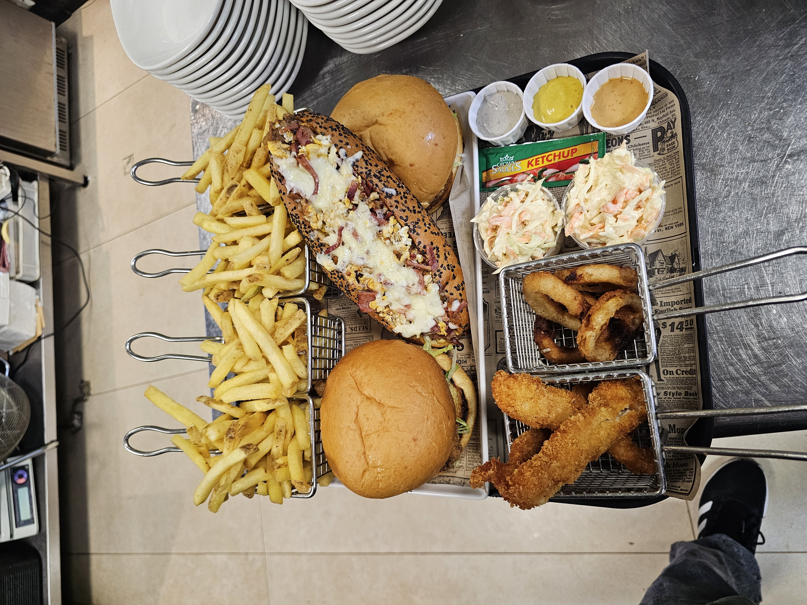
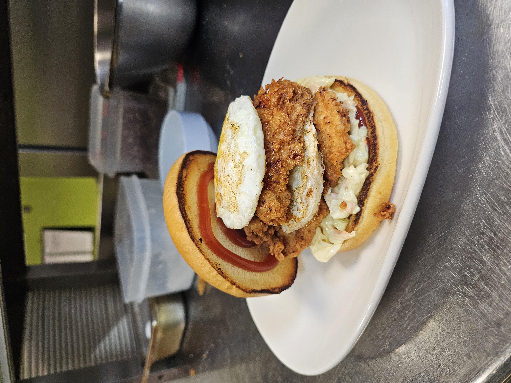
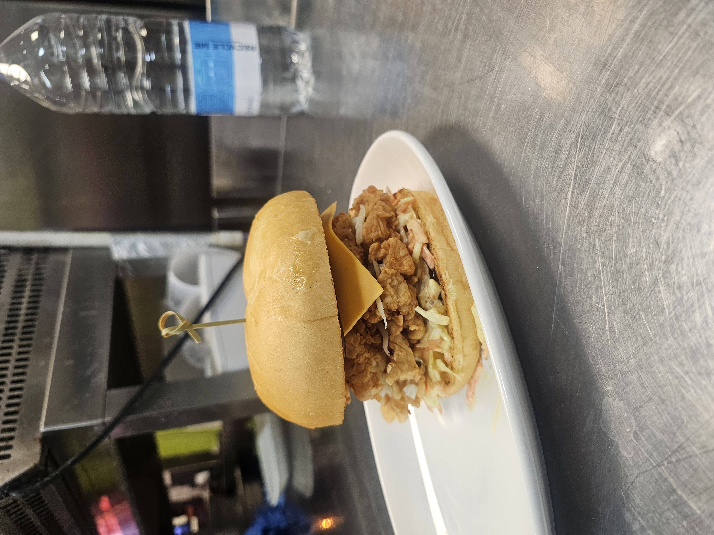
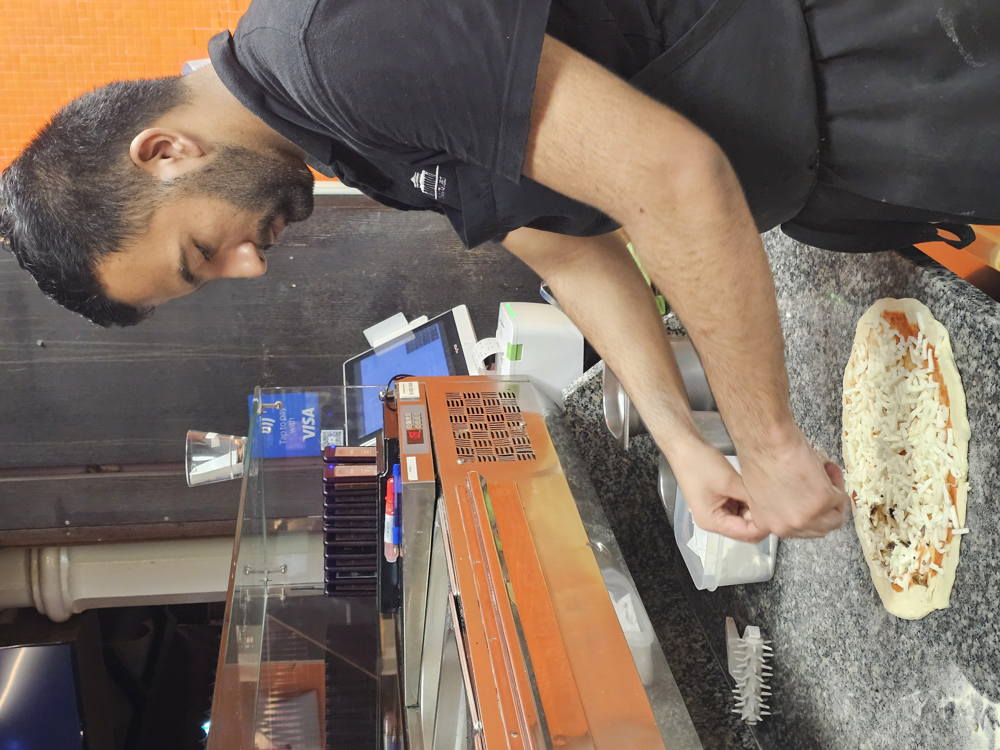
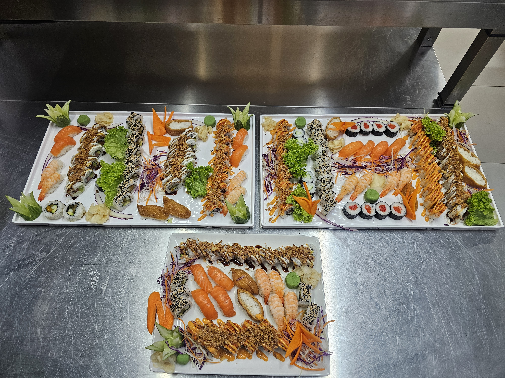
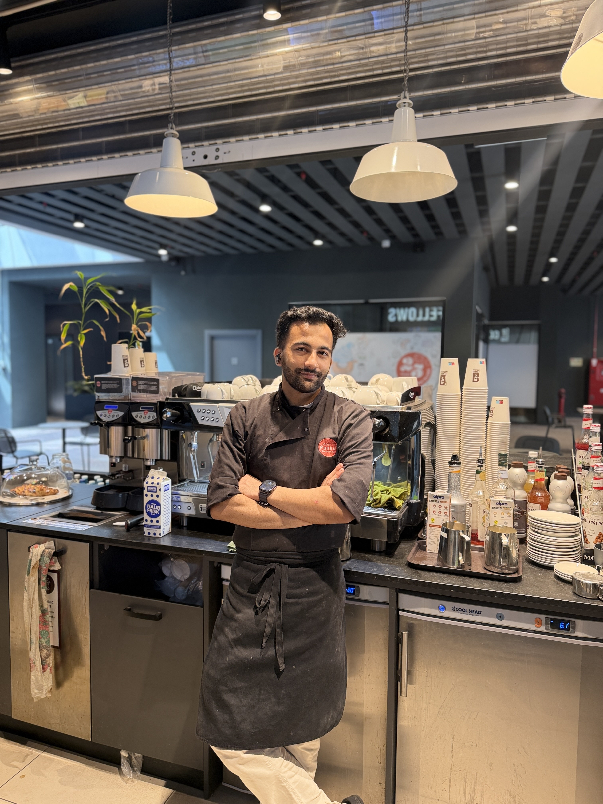

I am Sushil Kandel, a professional chef based in Malta with experience in Japanese cuisine, sushi preparation, burgers, hot Asian dishes and professional kitchen operations.
I am passionate about creating high-quality food while maintaining excellent hygiene, food safety and presentation standards. I enjoy working in busy kitchens and continuously developing my culinary skills.
Nigiri, Maki, Sashimi and specialty sushi preparation.
Burger preparation, cooking, assembly and presentation.
Professional preparation, knife skills and kitchen organization.
HACCP principles, food safety and cross-contamination prevention.






👨🍳 Chef Sushil Kandel
📍 Malta
🍣 Japanese Cuisine & Sushi
🍔 Burger & Kitchen Operations